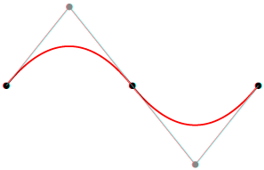

Your browser doesn't support the features required by impress.js, so you are presented with a simplified version of this presentation.
For the best experience please use the latest Chrome, Safari or Firefox browser.
Vector Graphics
notes for first slide
Plan:
- What is Vector Graphics
- Compare to raster graphics
- Software to editing vector graphics
- Applications
- Summarize pros and cons
Vector graphics is the use of geometrical primitives such as points, lines, curves, and shapes or polygons (all of which are based on mathematical expressions) to represent images in computer graphics
Let's compare
Raster graphics
vs

Vector Graphics
Scalability vector

File size
The size of vector graphics files is not dependent on the size of the image, but on its complexity.
Suited for lossless data compression algorithms.
Animation
Editing
Diferent from editing raster graphics.
Almost impossible to get photo realistic effects.
Possibility to create graphics in text editor.
Software to edit:
- Adobe Ilustrator
- Corel Draw
- Inkscape

The World Wide Web Consortium (W3C) standard for vector graphics is Scalable Vector Graphics (SVG)

Pros:
- Resizable without quality loss.
- File size not depend on the dimensions of image.
- Simple text/xml which mean it can be modified later via scripts.
- Animation.
Cons:
- Harder to create, edit.
- Almost impossible to archieve photo realism.
- Larger files in more detailed images.
Questions?